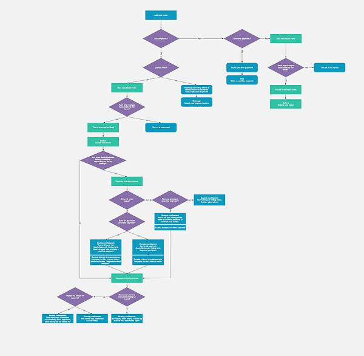
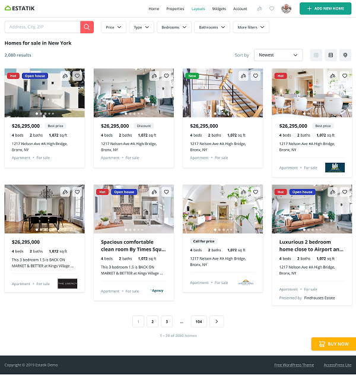
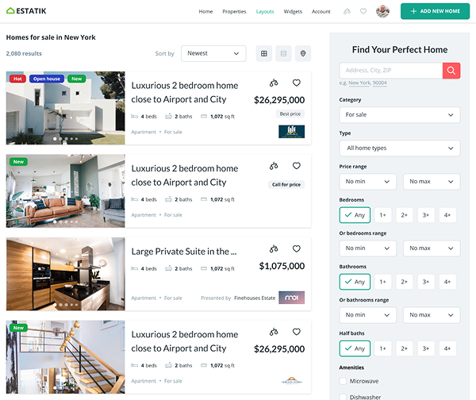
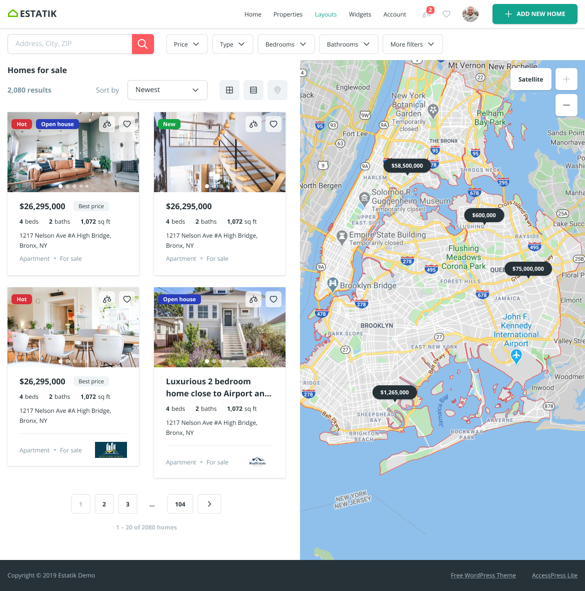
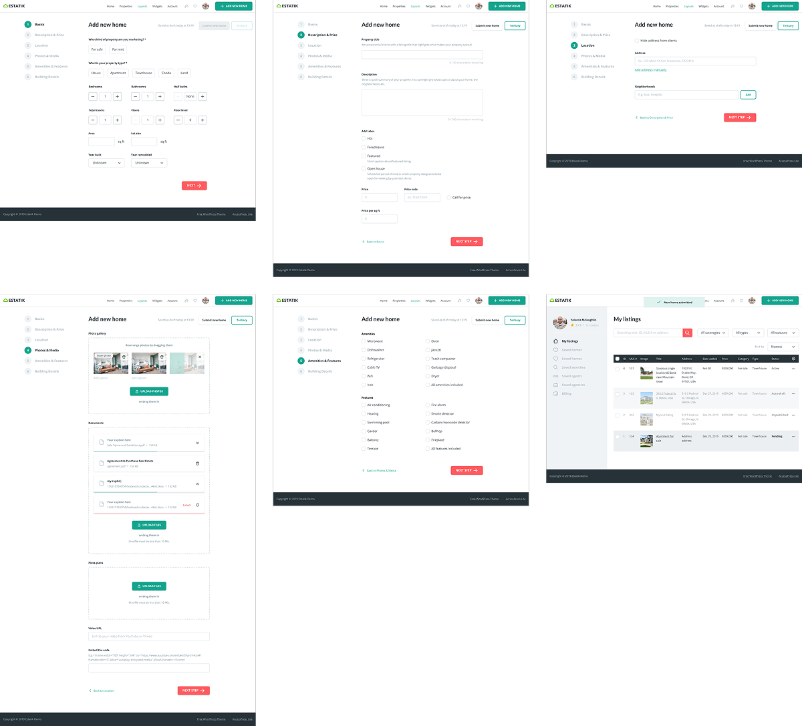

Design Approach
For complex workflows, I created detailed wireframes and flowcharts to align the team early and validate user flows before investing in high-fidelity design.

- 91 wireframes covering all major user flows
- Interactive prototypes for usability testing
- Detailed design specifications for developers, including component behavior, responsive rules, and interaction details
- A design system based on atomic design principles, ensuring consistent interfaces and speeding up future development
Property Browsing
Two primary browsing modes — grid view for quick scanning and list view with sidebar filters for detailed comparison.


Map View
Interactive map with cluster markers and inline property popups — letting users browse by location without leaving the map view.


Adding New Property
